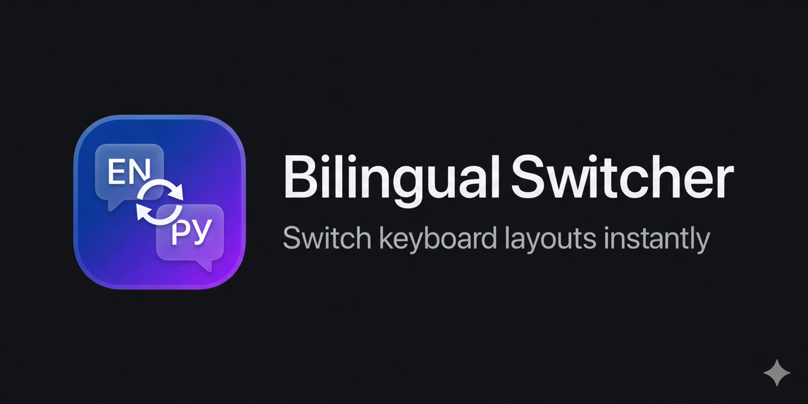

Bilingual Switcher
Fix text typed in the wrong keyboard layout on macOS — like Punto Switcher, but for any language pair.
What it does
You meant to type in Russian, but the layout was English. Or the other way around. Don't retype — select the text, press the hotkey:
Ghbdtn vbh! → Привет мир!
Руддщ Цщкдв! → Hello World!
Руддщ Цщкдв! → Hello World!
Works with any pair of installed keyboard layouts — not just English ↔ Russian. The app reads layout data directly from macOS, so there are no hardcoded mappings.
Install
Homebrew (recommended):
brew tap komandakycto/bilingual-switcher https://github.com/komandakycto/bilingual-switcher.git
brew install --cask bilingual-switcherOr download the latest .dmg from GitHub Releases and drag the app to Applications.
Usage
- Default hotkey: ⌥ ⌘ S — change it in Preferences.
- Select text in any app, press the hotkey. The app auto-detects which layout the text was typed in and converts to the other.
- Optional: enable “switch keyboard layout after conversion” so you can continue typing in the right language.
- On first launch, grant Accessibility permission in System Settings → Privacy & Security → Accessibility.
Why
- Any language pair — works with every keyboard layout that uses physical key mapping (English, Russian, Ukrainian, French, German, Spanish, Portuguese, Italian, Polish, Czech, Turkish, and more).
- Works everywhere — Slack, VS Code, Safari, Notes, Terminal, JetBrains IDEs, contenteditable web fields.
- Privacy — no telemetry, no data collection. Only network access is the optional Sparkle update check.
- Lightweight — native Swift, no Electron. Universal binary, ~3 MB.
- Open source — MIT licensed, source on GitHub.